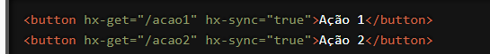

Estamos empolgados para apresentar a você uma funcionalidade poderosa do HTMX que permite coordenar e sincronizar múltiplas requisições AJAX de maneira eficiente: o atributo `hx-sync`. Com `hx-sync`, você pode controlar como suas requisições AJAX interagem entre si, evitando conflitos e melhorando a gestão de estado em suas aplicações web. Vamos explorar como essa funcionalidade pode otimizar suas interações web.
O que é o atributo `hx-sync`?
O `hx-sync` é um atributo do HTMX que permite especificar regras de sincronização para
requisições AJAX. Ele ajuda a evitar colisões e garante que as requisições sejam processadas na
ordem correta, proporcionando uma experiência de usuário mais consistente e previsível.
Como Funciona?
O `hx-sync` aceita uma expressão que define como as requisições devem ser sincronizadas.
Existem algumas palavras-chave importantes que você pode usar:
- `this`: Refere-se ao elemento atual.
- `#id`: Refere-se a um elemento específico pelo seu ID.
- `tag`: Refere-se a um elemento por sua tag.
Você pode usar essas palavras-chave em combinações para definir regras de sincronização.
Exemplo de Sincronização Simples
Vamos ver um exemplo prático para entender melhor como o `hx-sync` pode ser usado.
Suponha que você tenha vários botões que realizam requisições AJAX e você deseja garantir
que apenas uma requisição seja processada por vez:

Neste exemplo, ao clicar em qualquer um dos botões, a requisição AJAX será sincronizada, garantindo que apenas uma requisição esteja em andamento por vez. As requisições subsequentes serão enfileiradas e processadas na ordem.